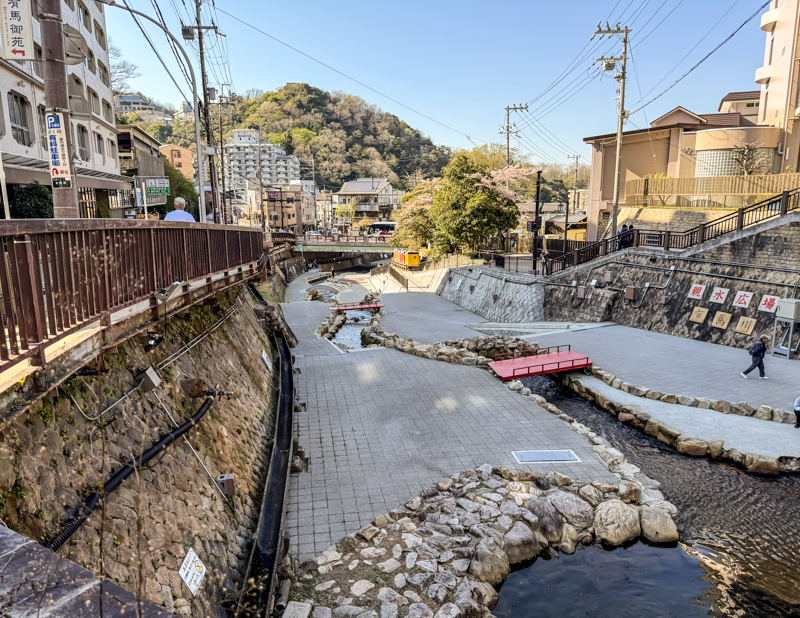

Arima Onsen
有馬温泉
Historia ja lähteet
Arima Onsen on yksi Japanin vanhimpia kylpyläkaupunkeja, jonka kirjoitettu historia alkaa 700-luvulta, kun Nihon Shoki 日本書紀 kirjassa (toiseksi vanhin Japanin historian kronikoista) mainitaan Keisari Jomein käyneen siellä. Myös ilmeisesti vanhin Japanin kronikka Kojiki 古事記 mainitsee kaupungin epäsuorasti. Joten voidaan olettaa, että siellä on kylvetty yli vuosituhat, ellei jopa vuosituhansia.
Kaupungin kylpylöissä kylvetään kahdella eri vedellä, kultaisella (kinsen
金泉) ja hopeisella (ginsen
銀泉).
金泉 vesi on värjäytynyt keltaisen oranssiksi raudan ja
suolojen ansiosta.
銀泉 vesi on kirkasta (väritöntä) mutta pitää sisällään
radiumia sekä karbonaattia. Jos sana radium alkaa pelottaa, niin kannattaa
lukaista uudestaan tuo historia kohta ja pohtia, että voiko se vesi olla
vaarallista, kun ihmiset ovat kylpeneet siinä useiden sukupolvien ajan ilman
isompia ongelmia. Mutta tietysti jos käytte siellä kylpemässä ja saatte syövän,
niin sitten olisi kannattanut tulla pohdinnoissa eri johtopäätökseen.
Itse asun alueella missä on radonia maaperässä, niin en hirveästi jaksanut
stressata hopeisesta vedestä.
Jos haluaa kuitenkin käydä radioaktiivisessa kylvyssä mutta pakka ei kestä
Japaniin matkustamista, niin siitä pääsee nauttimaan ihan
Suomessakin

Arima Onsen ja sen läpi virtaava Arima Onsen joki (2026).
Saapuminen Arima Onseniin
Japanin ulkopuolelta
Mikäli olet onnistunut saapumaan tänne suoraan Japanin ulkopuolelta, niin kerro ihmeessä miten se on mahdollista tällä lomakkeella, niin päivitän sen tänne sivulle. Kiitos jo etukäteen!
Japanin sisältä
Tyypillisiä tapoja saapua Arima Onseniin, on junalla, linja-, tai
henkilöautolla.
Mikäli saavut henkilöautolla, kannattaa ottaa huomioon kaupungin rajoitettu määrä
parkkipaikkoja, joten jos et meinaa majoittua ryokanissa / hotellissa, niin
kannattaa harkita toisia kulkuneuvoja. Mikäli majoitut kaupungilla, kannattaa
varmistaa että majoituksessa on parkkipaikkoja tarjolla. Jos kuitenkin päätät
saapua autolla, niin kaupungissa löytyy isompi parkkitalo Arima Onsen Daiichi
Chushajo Osoitteesta: 1295-2 Arima-cho, Kita-ku, Kobe (puh nro. +81-78-904-0464),
sekä maksullinen ulkoparkkipaikka Arimali Parking Osoitteessa: １２２９－１ Arima,
Kita-ku, Kobe (puh nro. +81-78-903-1024)
Valtaosa matkalaisista kuitenkin saapuvat joko linja-autolla tai junalla.
Junalla tänne on mahdollista päästä Kobesta, mistä Kobe Electric Railway juna
kuljettaa Kobe Dentetsu-Arima Linjaa myöten paikallis- (
普通) ja Semi-Express (
準急) junilla Shinkaichin (
新開地) asemalta.
Linja-auto liikennettä hoitaa JR Bus / Hankyo.
Linja-autolla löytyy jo useampikin vaihtoehto, sillä Kobesta on Sannomiyan
asemalta suora bussi yhteys Arima Onseniin. Matka kestää noin 30min.
Osakasta on Umedan asemalta suora bussi yhteys Arima Onseniin. Matka kestää noin
tunnin, riippuen liikenteestä. Umedan asemalta on myös suora junayhteys Sannomiyan
asemalle, joka kestää noin 25min. Sieltä voi sitten vaihtaa bussiin, joka menee
kohteeseen. Sitäkin reittiä voi harkita, jos haluaa vähän junailla. Umedasta
lähtevät Hankyo Bus yhtiön bussit koukkaavat myös Osakan lentoasemalta (ITM)
matkustajia kyytiin.
Kioton asemalta pääsee suoralla bussi yhteydellä Arima Onseniin. Matka kestää noin
70min.
Arima Onseniin on mahdollista päästä myös köysirataa pitkin! Eli jos olet eksynyt Rokkō vuorille, niin etsi Rokko Sancho Station opasteita, josta lähtee köysirata Arima Onseniin. Myös jos on vierailemassa Arima Onsenissa, niin tämä no suositeltava kokemus, sillä varsinkin kirkkaina päivinä, on maisemat vuoren päältä todella upeita. Jos on pilvistä ja sateista, niin sinne ei välttämättä kannata lähteä seikkailemaan, sillä köysirata nousee noin kilometriin, joten on suuri mahdollisuus että päätyy pilveen, eikä tahdo nähdä nenäänsä kauemmaksi vähän karrikoidusti sanoen.
Nähtävyyksiä ja tekemistä
Pääasiallinen syy ihmisillä saapua onseneihin on lähes poikkeuksetta kylpeminen.
Arina Onsenissa on kaksi julkista kylpylää. Myös jotkin hotellit sallivat
ulkopuolisten käyttää heidän kylpylöitään päiväsaikaan.
Julkisista kylpylöistä isompi on nimeltään Kin no Yu, joka on minuutin
kävelymatkan päässä Arima BUS terminaalista.
Kin No Yo pitää sisällään altaat molemmilla Arina Onsenin vesillä täytettynä.
Kultaisia altaita on paria eri lämpötilaa (kuuma ja tosi kuuma härmäläiselle) ja
yksi hopeinen allas.
Toinen julkinen kylpylä on noin 6min kävelymatkan päässä Arima BUS terminalista. Tämä on julkisista kylpylöistä pienempi ja pitää sisällään hopeisen altaan.
Arima Onsen pitää sisällään paljon eritasoisia ravintoloita, mutta kannattaa muistaa, että kyseessä on turismiin keskittyvä kaupunki, niin ravintoloiden hintalaatusuhde ei välttämättä ole hyvä.
Kaupungissa löytyy myös muutama pyhäkkö, joista tärkein on Tōsen-jinja
湯泉神社
. Pykäkkö on omistettu kuumien lähteiden suojelusjumalille
Ōnamuchi-no-Mikotolle, Sukuhikona-no-Mikotolle ja Kumano Kusumi-no-Mikotolle.
Tammikuun 2. päivä pidetään Irihatsushiki seremonia, jossa kiitetään kuumien
lähteiden jumalaa sekä Ariman perustajia, munkkeja Gyokin ja Niseiniä.
Seremoniassa vuoden ensimmäinen kuuman lähteen vesi uhrataan jumalille ja
rukoillaan Arima Onsenin vaurauden ja turvallisuuden puolesta. Kyseinen riitti
on jatkunut EDO-kaudesta lähtien yhdistäen shintolaisuutta ja buddhalaisuutta.
Pykäkkö tunnetaan myös hedelmällisyyden ja lasten saamisen jumalana, jossa
uskotaan, että lapsettomat voivat saada lapsen kylpemällä Ariman kuumissa
lähteissä ja rukoilemalla pyhäkössä. (Voi olla että pelkkä kylpeminen ja rukoilu
ei riitä vaan joutuu myös perinteistä metodia harrastamaan)
Pyhäköstä voi myös ostaa Tamahoko-sama ja
Ofuku-sama -nimiset hedelmällisyysamuletit, joita tullaan hankkimaan jopa matkojen
päästä.